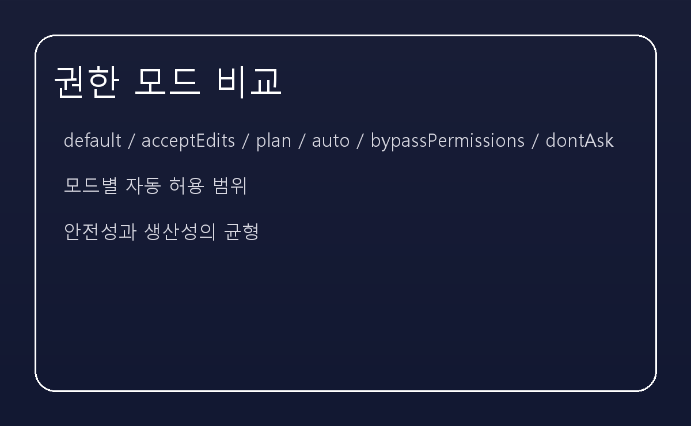
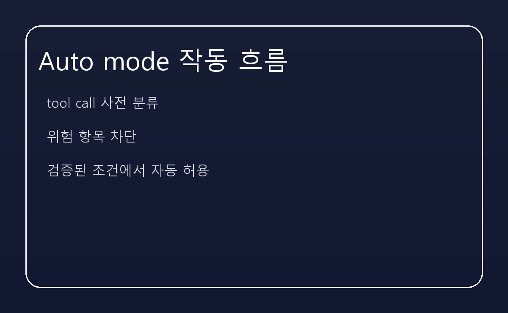

[AI] 클로드 코드의 핵심 기능 5가지 — 권한 모드부터 자동 분류까지
솔직히 말씀드리면, 클로드 코드를 처음 봤을 때 저는 단순한 코드 자동화 도구라고 생각했습니다. 그런데 실제로 들여다보니, 이 시스템이 가장 신경 쓴 지점은 권한과 안전을 어떻게 설계하느냐였습니다.
클로드 코드의 핵심은 크게 다섯 가지로 정리할 수 있습니다. 그중에서도 가장 중요한 것은, 자동화 전에 권한 흐름을 먼저 정해 두었다는 점입니다.
일반적인 AI 코딩 도구는 '코드 생성'에 초점을 맞춥니다. 그런데 클로드 코드는 그 이전 단계에서 이 명령을 실행해도 되는가를 먼저 묻습니다.
이 도구에는 default, acceptEdits, plan, auto, bypassPermissions, dontAsk 같은 모드가 있습니다. 각각은 자동 허용 범위가 다르고, 사용자의 신뢰 수준에 따라 점진적으로 풀어줍니다.
가장 눈에 띄는 것은 권한 모드를 명확히 구분한 구조입니다. 예를 들면 acceptEdits는 워킹 디렉터리 내 파일 편집과 기본 파일 시스템 작업을 자동으로 허용합니다.
이 모드는 코드 리뷰가 많은 프로젝트에서 특히 효과적입니다. 자잘한 파일 생성/이동/복사 작업을 승인 대기 없이 처리할 수 있으니까요.

auto 모드는 무조건 풀어주는 모드가 아닙니다. 이 모드는 각 tool call을 분류기가 사전 평가하고, 위험한 항목을 걸러내는 방식입니다.
여기서 차단하는 내용은 꽤 명확합니다. 외부 코드 다운로드 및 실행, 민감 데이터 전송, 프로덕션 배포, 대량 삭제, 권한 변경, 공유 인프라 수정, 세션 이전 파일의 비가역적 삭제, 강제 푸시 등이 대표적입니다.

acceptEdits가 단순히 파일 편집을 편하게 해주는 이유는, 일반 개발자가 체감하는 피로를 줄이기 때문입니다.
이 모드는 워킹 디렉터리 내 작업에 한정해 자동 승인을 허용합니다. 그래서 불필요한 권한 승인을 보지 않으면서, 반복적인 수정이나 리팩터링을 빠르게 진행할 수 있습니다.
plan 모드는 '먼저 계획을 세우고, 나중에 실행'하는 방식입니다. Claude가 제안한 작업과 결과를 먼저 보여주고, 사용자가 검토한 뒤 승인하도록 합니다.
이 흐름은 복잡한 변경이나 민감한 작업에서 특히 유용합니다. 즉시 실행하는 대신, 결과를 먼저 확인할 수 있다는 점에서 안전성을 높입니다.
클로드 코드는 자동화가 넓어질 때도 중요한 경로를 지키는 원칙을 갖고 있습니다. .git, .vscode, .idea, .devcontainer, .claude 같은 디렉터리는 자동 승인 대상에서 빠집니다.
또한 allow와 deny 규칙을 통해 특정 명령을 세밀하게 제어할 수 있습니다. 이로 인해 auto 모드에서도 무분별한 권한 확장이 방지됩니다.
결국 클로드 코드는 권한 모드 분리와 분류기 기반 검증이라는 두 축을 중심으로 설계된 도구입니다. 이 구조는 단순한 코드 생성 자동화를 넘어서, 안전한 실행까지 고려하는 접근입니다.
이 글을 읽는다면, 먼저 auto와 acceptEdits의 차이를 이해하고, plan 모드를 적절히 활용해 보시길 권해 드립니다.